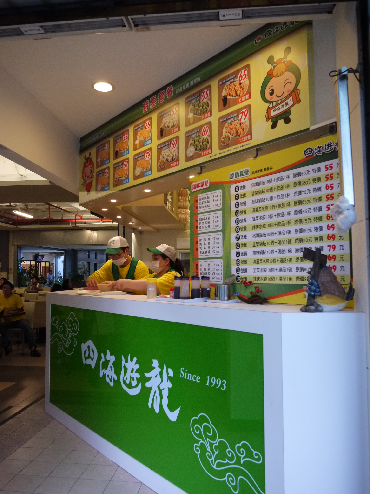

四海遊龍
四海遊龍 | 功夫茶 | 金盃美而美 | 食香園素食館李媽媽麵店 | 合味自助餐 | 滷冰花養生滷味
- 本校營業地點位置 第一學生活動中心
- 餐飲業者名稱 洪淑芬
- 公司名稱 四海遊龍
- 營業時間：星期一~日10:00~19:30
- 休息日：國定假日及活動中心公告休假日
- 聯絡電話 02-23686478
- 營業項目、型態 鍋貼水餃專賣店
- 業者簡介
- 老闆娘洪姐非常的和藹可親，除了長得很像高雄市長花媽以外，對待同學就像自己的小孩；店長玉如也是本店活招牌，甜甜的笑容和服務態度，堪稱是學生殺手。洪姐在臺灣科技大學、臺北科技大學、師範大學的學校餐廳以賣韓式料理出名，都經營的有聲有色，深受各校同學喜愛。在臺大轉加盟鍋貼水餃，向四海遊龍總公司爭取比市價還便宜的售價及優惠套餐組合，目的就是希望臺大同學吃的健康、營養有飽足感，才有滿滿的力氣念書哦。四海遊龍創立於民國八十二年，歷經二十年的努力，為全台最老字號的鍋貼連鎖專賣店。面對市場競爭及嚴苛挑戰，不斷地研發、創新與堅持品質，目前中國大陸已有100餘間分店。台大店於2013年1月1日隆重開幕，單點憑臺大有校證件9折優惠，另有多項優惠套餐供您選擇，提供餐點預訂服務。
餐廳業者參考照片
- 